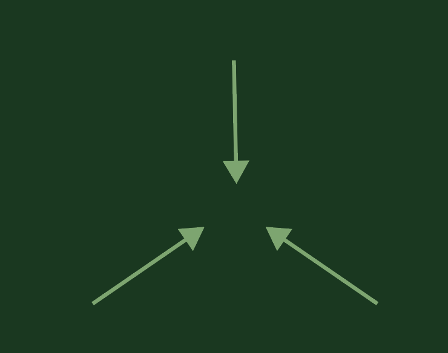
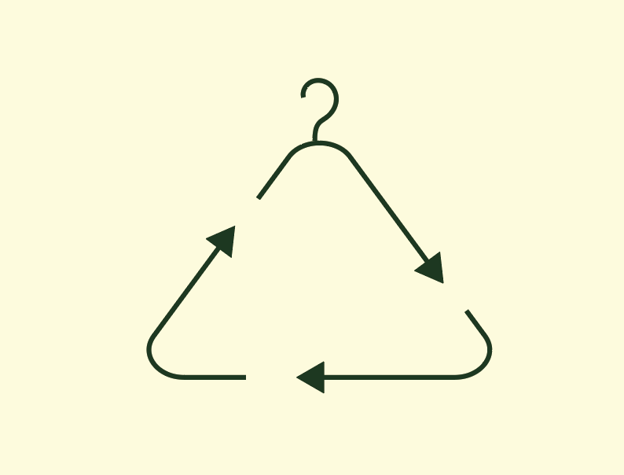

REDUCE

Reduceer de Mode-Industrie: Kies voor vintage mode om de vraag naar nieuwe kledingproductie te verminderen. Elke vintage aankoop vermindert de ecologische belasting en helpt de overproductie tegen te gaan. Bij "Bij Ons Vintage" geloven we in de kracht van minder om meer te bereiken voor onze planeet.

REUSE
Geef Vintage Kleding een Tweede Leven: Vintage kleding heeft een verhaal te vertellen, en wanneer je het draagt, wordt dat verhaal het jouwe. Elke vintage outfit is een uniek statement, doordrenkt met geschiedenis en karakter. Door vintage te omarmen, draag je bij aan het behoud van erfgoed en stijl.

RECYCLE
Verminder Textielafval: De mode-industrie is een grote vervuiler, maar jouw keuze voor vintage kleding vermindert de hoeveelheid textielafval. Vintage kledingstukken worden hergebruikt en dragen bij aan een duurzamere modecyclus. Bij "Bij Ons Vintage" streven we ernaar om textielafval te verminderen en een positieve impact te hebben op onze planeet.